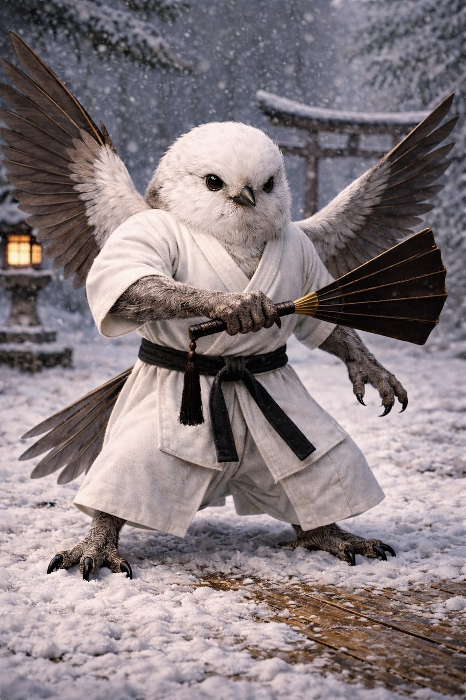

Shima Enaga
Aegithalos caudatus japonicus
Region: Hokkaido, Japan
Habitat: Cold forests, snowy woodlands and northern tree cover
Martial Representation: Aikido with Tessen
The Shima Enaga embodies deceptive softness, precise redirection and refined defensive timing. Small, elusive and difficult to read, it avoids direct force in favor of fluid repositioning, angle manipulation and elegant counter-control. In combat, it thrives through technical disruption rather than brute impact.
Martial Discipline Overview
Aikido is a Japanese martial art focused on redirection, balance breaking and controlled response to incoming force. The tessen, a war fan historically associated with self-defense and tactical use, adds defensive structure and precise close-range utility. Within WAFT, it enhances agility, technique and evasive counter-control.
Combat Attributes
Combat Abilities
Passive Ability
Inverted Inertia
Whenever Shima Enaga dodges an attack, it automatically counterattacks, dealing damage equal to 20% of the opponent’s Attack.
This counterattack cannot critically strike, does not apply effects, and does not consume mana.
Special Attack
Illusory Dance
Reduces damage received that turn by 50%, with a minimum of 20% of the original damage still going through.
If the opponent misses, Shima Enaga gains a guaranteed hit and +25% damage on its next turn.
Ultimate Charge: Reactive (4 misses)